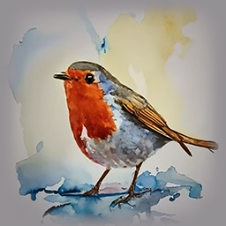

Rödhaken är en liten fågel med orengerött bröst och en flöjtande sång.
Helst äter rödhaken insekter, men på vintern äter den frön och bär.
I trädgården ser vi den både på sommaren och vintern. daslkj kljadsflkj aslfdkjaslkj flksjf lsdkf lkasd flklk
Mer innehåll om rödhakar